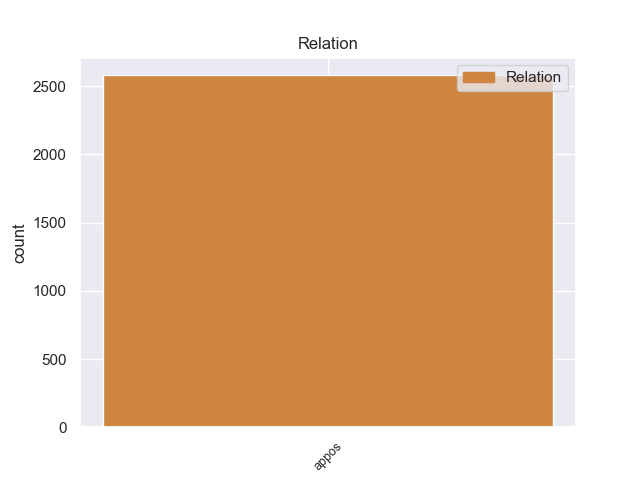
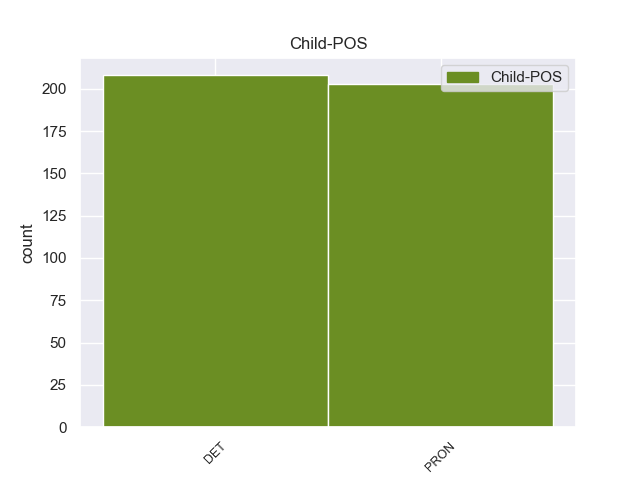

Distribution of features within this leaf



Morphosyntax Rules sorted by frequency.
- When the dependent token is the fixed multiword expression(fixed) of the head token, and the head token is ADP and the dependent token is PRON, the Case needs to be Gen.
1 Но _ _ _ _ 0 _ _ _
2 еще _ _ _ _ 0 _ _ _
3 задолго _ _ _ _ 0 _ _ _
4 до до ADP _ _ 0 _ _ _
5 того то PRON _ Animacy=Inan|Case=Gen|Gender=Neut|Number=Sing 4 fixed 4:fixed _
6 , _ _ _ _ 0 _ _ _
7 как _ _ _ _ 0 _ _ _
8 я _ _ _ _ 0 _ _ _
9 осознал _ _ _ _ 0 _ _ _
10 свою _ _ _ _ 0 _ _ _
11 обреченность _ _ _ _ 0 _ _ _
12 быть _ _ _ _ 0 _ _ _
13 всегда _ _ _ _ 0 _ _ _
14 на _ _ _ _ 0 _ _ _
15 втором _ _ _ _ 0 _ _ _
16 плане _ _ _ _ 0 _ _ _
17 , _ _ _ _ 0 _ _ _
18 я _ _ _ _ 0 _ _ _
19 уже _ _ _ _ 0 _ _ _
20 не _ _ _ _ 0 _ _ _
21 мог _ _ _ _ 0 _ _ _
22 любить _ _ _ _ 0 _ _ _
23 первого _ _ _ _ 0 _ _ _
24 . _ _ _ _ 0 _ _ _
1 Сколько _ _ _ _ 0 _ _ _
2 минуло _ _ _ _ 0 _ _ _
3 лет _ _ _ _ 0 _ _ _
4 , _ _ _ _ 0 _ _ _
5 а _ _ _ _ 0 _ _ _
6 мне _ _ _ _ 0 _ _ _
7 до до ADP _ _ 0 _ _ _
8 сих сей DET _ Case=Gen|Number=Plur 7 fixed 7:fixed _
9 пор _ _ _ _ 0 _ _ _
10 снятся _ _ _ _ 0 _ _ _
11 его _ _ _ _ 0 _ _ _
12 пестрота _ _ _ _ 0 _ _ _
13 и _ _ _ _ 0 _ _ _
14 шум _ _ _ _ 0 _ _ _
15 , _ _ _ _ 0 _ _ _
16 его _ _ _ _ 0 _ _ _
17 снедь _ _ _ _ 0 _ _ _
18 и _ _ _ _ 0 _ _ _
19 сытые _ _ _ _ 0 _ _ _
20 запахи _ _ _ _ 0 _ _ _
21 , _ _ _ _ 0 _ _ _
22 теплая _ _ _ _ 0 _ _ _
23 , _ _ _ _ 0 _ _ _
24 вязкая _ _ _ _ 0 _ _ _
25 смолка _ _ _ _ 0 _ _ _
26 , _ _ _ _ 0 _ _ _
27 кедровая _ _ _ _ 0 _ _ _
28 халва _ _ _ _ 0 _ _ _
29 и _ _ _ _ 0 _ _ _
30 золотые _ _ _ _ 0 _ _ _
31 глаза _ _ _ _ 0 _ _ _
32 женщины _ _ _ _ 0 _ _ _
33 . _ _ _ _ 0 _ _ _
non-conforming Examples:
1 Между между ADP _ _ 0 _ _ _
2 прочим прочее PRON _ Animacy=Inan|Case=Ins|Gender=Neut|Number=Sing 1 fixed 1:fixed SpaceAfter=No
3 , _ _ _ _ 0 _ _ _
4 я _ _ _ _ 0 _ _ _
5 доучивалась _ _ _ _ 0 _ _ _
6 после _ _ _ _ 0 _ _ _
7 войны _ _ _ _ 0 _ _ _
8 и _ _ _ _ 0 _ _ _
9 дирекция _ _ _ _ 0 _ _ _
10 института _ _ _ _ 0 _ _ _
11 знала _ _ _ _ 0 _ _ _
12 , _ _ _ _ 0 _ _ _
13 что _ _ _ _ 0 _ _ _
14 я _ _ _ _ 0 _ _ _
15 была _ _ _ _ 0 _ _ _
16 в _ _ _ _ 0 _ _ _
17 оккупации _ _ _ _ 0 _ _ _
18 . _ _ _ _ 0 _ _ _
1 И _ _ _ _ 0 _ _ _
2 снова _ _ _ _ 0 _ _ _
3 , _ _ _ _ 0 _ _ _
4 между между ADP _ _ 0 _ _ _
5 прочим прочее PRON _ Animacy=Inan|Case=Ins|Gender=Neut|Number=Sing 4 fixed 4:fixed SpaceAfter=No
6 , _ _ _ _ 0 _ _ _
7 за _ _ _ _ 0 _ _ _
8 ней _ _ _ _ 0 _ _ _
9 пришлось _ _ _ _ 0 _ _ _
10 закрывать _ _ _ _ 0 _ _ _
11 обе _ _ _ _ 0 _ _ _
12 двери _ _ _ _ 0 _ _ _
13 . _ _ _ _ 0 _ _ _
1 Вторая _ _ _ _ 0 _ _ _
2 особенность _ _ _ _ 0 _ _ _
3 , _ _ _ _ 0 _ _ _
4 которая _ _ _ _ 0 _ _ _
5 удивила _ _ _ _ 0 _ _ _
6 ученых _ _ _ _ 0 _ _ _
7 , _ _ _ _ 0 _ _ _
8 - _ _ _ _ 0 _ _ _
9 это _ _ _ _ 0 _ _ _
10 возможность _ _ _ _ 0 _ _ _
11 формирования _ _ _ _ 0 _ _ _
12 подобного _ _ _ _ 0 _ _ _
13 вещества _ _ _ _ 0 _ _ _
14 при _ _ _ _ 0 _ _ _
15 температуре _ _ _ _ 0 _ _ _
16 около _ _ _ _ 0 _ _ _
17 нуля _ _ _ _ 0 _ _ _
18 градусов _ _ _ _ 0 _ _ _
19 по _ _ _ _ 0 _ _ _
20 Цельсию _ _ _ _ 0 _ _ _
21 , _ _ _ _ 0 _ _ _
22 в в ADP _ _ 0 _ _ _
23 то тот DET _ Animacy=Inan|Case=Acc|Gender=Neut|Number=Sing 22 fixed 22:fixed _
24 время _ _ _ _ 0 _ _ _
25 как _ _ _ _ 0 _ _ _
26 на _ _ _ _ 0 _ _ _
27 заводах _ _ _ _ 0 _ _ _
28 Lucent _ _ _ _ 0 _ _ _
29 для _ _ _ _ 0 _ _ _
30 этих _ _ _ _ 0 _ _ _
31 целей _ _ _ _ 0 _ _ _
32 используется _ _ _ _ 0 _ _ _
33 высокотемпературная _ _ _ _ 0 _ _ _
34 обработка _ _ _ _ 0 _ _ _
35 . _ _ _ _ 0 _ _ _
1 Современные _ _ _ _ 0 _ _ _
2 европейские _ _ _ _ 0 _ _ _
3 , _ _ _ _ 0 _ _ _
4 в в ADP _ _ 0 _ _ _
5 том тот DET _ Case=Loc|Gender=Neut|Number=Sing 4 fixed 4:fixed _
6 числе _ _ _ _ 0 _ _ _
7 и _ _ _ _ 0 _ _ _
8 финские _ _ _ _ 0 _ _ _
9 , _ _ _ _ 0 _ _ _
10 шаманы _ _ _ _ 0 _ _ _
11 свои _ _ _ _ 0 _ _ _
12 традиции _ _ _ _ 0 _ _ _
13 растеряли _ _ _ _ 0 _ _ _
14 и _ _ _ _ 0 _ _ _
15 перенимают _ _ _ _ 0 _ _ _
16 их _ _ _ _ 0 _ _ _
17 теперь _ _ _ _ 0 _ _ _
18 у _ _ _ _ 0 _ _ _
19 тувинцев _ _ _ _ 0 _ _ _
20 , _ _ _ _ 0 _ _ _
21 которых _ _ _ _ 0 _ _ _
22 считают _ _ _ _ 0 _ _ _
23 основателями _ _ _ _ 0 _ _ _
24 шаманизма _ _ _ _ 0 _ _ _
25 . _ _ _ _ 0 _ _ _
1 Да _ _ _ _ 0 _ _ _
2 , _ _ _ _ 0 _ _ _
3 он _ _ _ _ 0 _ _ _
4 пожалел _ _ _ _ 0 _ _ _
5 хлеба _ _ _ _ 0 _ _ _
6 , _ _ _ _ 0 _ _ _
7 было _ _ _ _ 0 _ _ _
8 у _ _ _ _ 0 _ _ _
9 него _ _ _ _ 0 _ _ _
10 такое _ _ _ _ 0 _ _ _
11 движение _ _ _ _ 0 _ _ _
12 , _ _ _ _ 0 _ _ _
13 верно _ _ _ _ 0 _ _ _
14 , _ _ _ _ 0 _ _ _
15 но _ _ _ _ 0 _ _ _
16 бублик _ _ _ _ 0 _ _ _
17 - _ _ _ _ 0 _ _ _
18 то _ _ _ _ 0 _ _ _
19 он _ _ _ _ 0 _ _ _
20 дал _ _ _ _ 0 _ _ _
21 , _ _ _ _ 0 _ _ _
22 а _ _ _ _ 0 _ _ _
23 сдобный _ _ _ _ 0 _ _ _
24 , _ _ _ _ 0 _ _ _
25 дорогой _ _ _ _ 0 _ _ _
26 , _ _ _ _ 0 _ _ _
27 румяный _ _ _ _ 0 _ _ _
28 бублик _ _ _ _ 0 _ _ _
29 , _ _ _ _ 0 _ _ _
30 между между ADP _ _ 0 _ _ _
31 прочим прочее PRON _ Animacy=Inan|Case=Ins|Gender=Neut|Number=Sing 30 fixed 30:fixed SpaceAfter=No
32 , _ _ _ _ 0 _ _ _
33 лучше _ _ _ _ 0 _ _ _
34 , _ _ _ _ 0 _ _ _
35 ценнее _ _ _ _ 0 _ _ _
36 черного _ _ _ _ 0 _ _ _
37 хлеба _ _ _ _ 0 _ _ _
38 , _ _ _ _ 0 _ _ _
39 если _ _ _ _ 0 _ _ _
40 уж _ _ _ _ 0 _ _ _
41 на _ _ _ _ 0 _ _ _
42 то _ _ _ _ 0 _ _ _
43 пошло _ _ _ _ 0 _ _ _
44 , _ _ _ _ 0 _ _ _
45 это _ _ _ _ 0 _ _ _
46 во-первых _ _ _ _ 0 _ _ _
47 ; _ _ _ _ 0 _ _ _
48 а _ _ _ _ 0 _ _ _
49 во-вторых _ _ _ _ 0 _ _ _
50 , _ _ _ _ 0 _ _ _
51 он _ _ _ _ 0 _ _ _
52 же _ _ _ _ 0 _ _ _
53 сразу _ _ _ _ 0 _ _ _
54 опомнился _ _ _ _ 0 _ _ _
55 , _ _ _ _ 0 _ _ _
56 бросился _ _ _ _ 0 _ _ _
57 назад _ _ _ _ 0 _ _ _
58 , _ _ _ _ 0 _ _ _
59 хотел _ _ _ _ 0 _ _ _
60 все _ _ _ _ 0 _ _ _
61 поправить _ _ _ _ 0 _ _ _
62 , _ _ _ _ 0 _ _ _
63 но _ _ _ _ 0 _ _ _
64 все _ _ _ _ 0 _ _ _
65 куда-то _ _ _ _ 0 _ _ _
66 делось _ _ _ _ 0 _ _ _
67 , _ _ _ _ 0 _ _ _
68 сместилось _ _ _ _ 0 _ _ _
69 , _ _ _ _ 0 _ _ _
70 исказилось _ _ _ _ 0 _ _ _
71 - _ _ _ _ 0 _ _ _
72 что _ _ _ _ 0 _ _ _
73 ж _ _ _ _ 0 _ _ _
74 тут _ _ _ _ 0 _ _ _
75 поделаешь _ _ _ _ 0 _ _ _
76 ? _ _ _ _ 0 _ _ _